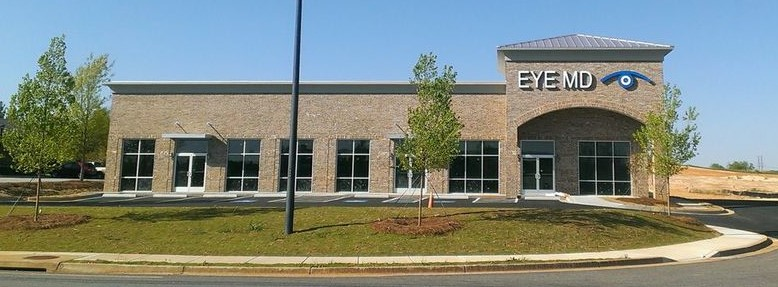
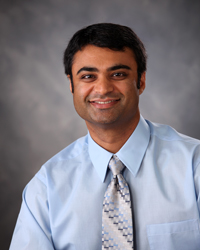
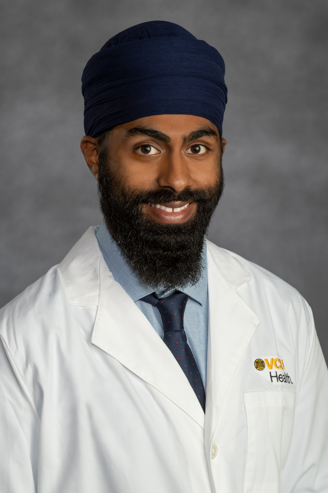
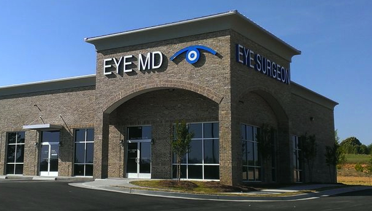

EYE MD
Medical and surgical treatment of eye disorders, including cataracts, glaucoma, dry eye, diabetic eye disease, and comprehensive ophthalmic care.

Now accepting new patients. Eye MD welcomes adults age 18 and older from Barrow, Clarke, Hall, Jackson, Gwinnett, Oconee, Walton, and neighboring counties.
Doctors

Manan I. Shah, MD
Dr. Shah is originally from Tifton, Georgia. He earned his bachelor's degree in Biology from Emory University in Atlanta and his MD from Georgetown University School of Medicine in Washington, DC. He completed his ophthalmology residency at Loyola University Medical Center in Chicago, followed by a cornea fellowship at the University of Cincinnati. After practicing in New York and New Jersey for four years, he returned home to Georgia in 2010. He is a Fellow of the American Academy of Ophthalmology and is also board-certified by the American Board of Ophthalmology.

Baltej Dhillon, MD
Dr. Dhillon was born in Canada and raised primarily in Richmond, Virginia. He earned his MD from the University of Central Florida College of Medicine and completed his ophthalmology residency at Virginia Commonwealth University. He is passionate about patient-centered care and helping patients make informed decisions about their treatment. He joined Eye MD in August 2025. Outside of work, he enjoys spending time outdoors with his family, playing basketball and tennis, and traveling. Dr. Dhillon is fluent in Punjabi and Spanish.
Eye Care
We specialize in comprehensive medical and surgical eye care, including the treatment of cataracts, glaucoma, dry eye, and diabetic eye disease, as well as comprehensive eye exams and optical services.
Cataract surgery is an important part of our practice. These short videos explain cataract surgery, how to prepare for your procedure, and lens replacement options.
Cataract Surgery Basics
Preparing for Surgery
Lens Replacement
Eye MD Surgery Center
Now Open
Barrow County's First and Only Eye Surgery Center
Cataract Surgery and Minimally Invasive Glaucoma Surgery

Financing
CareCredit
Eye MD offers CareCredit as a financing option for eligible vision procedures and services. CareCredit allows patients to pay for healthcare expenses over time with monthly payments.
- Low minimum monthly payments
- No up-front costs or pre-payment penalties